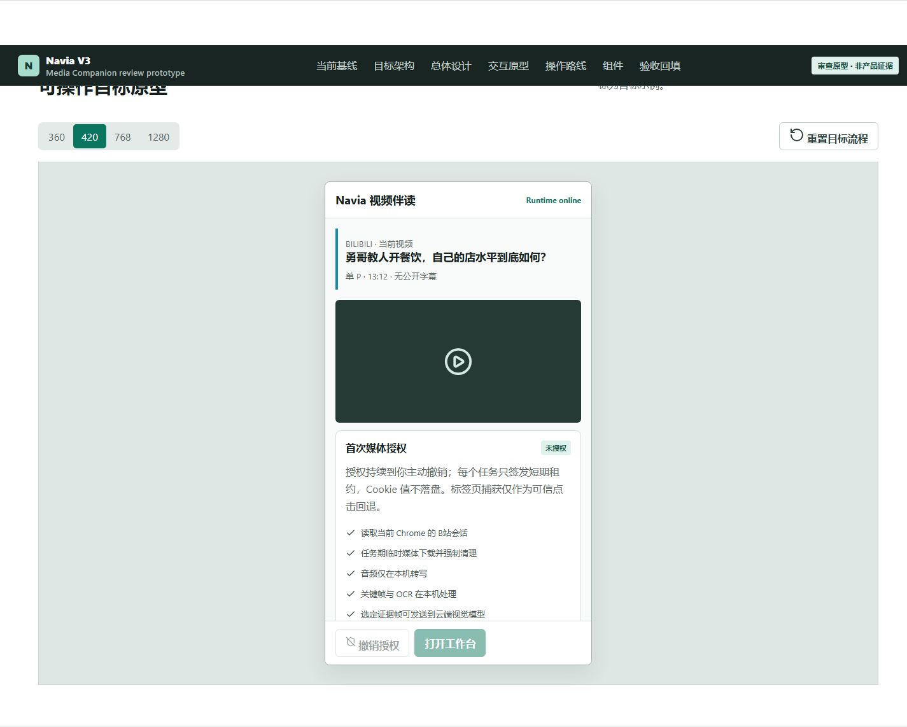
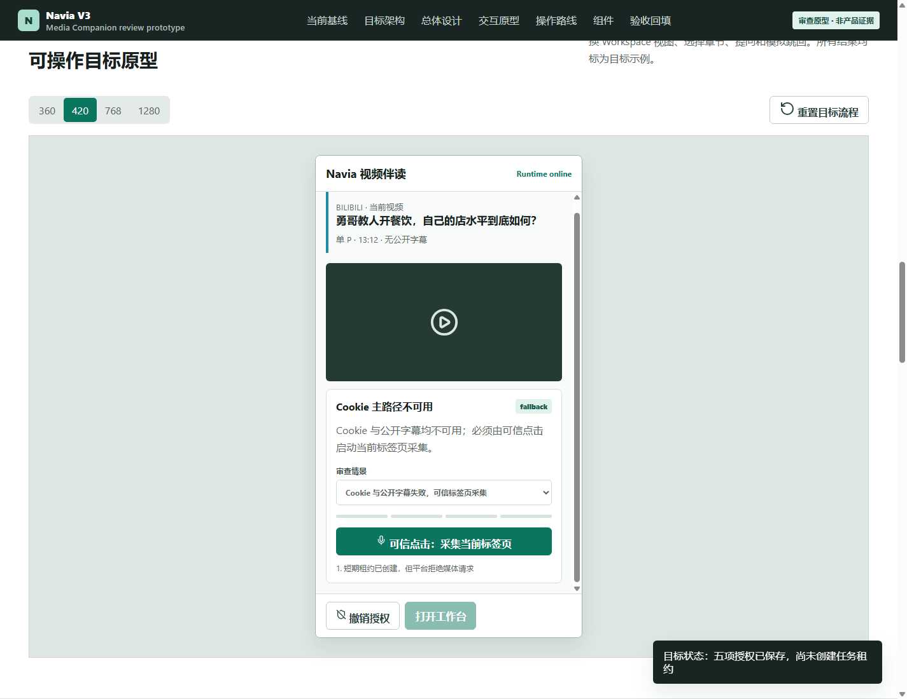
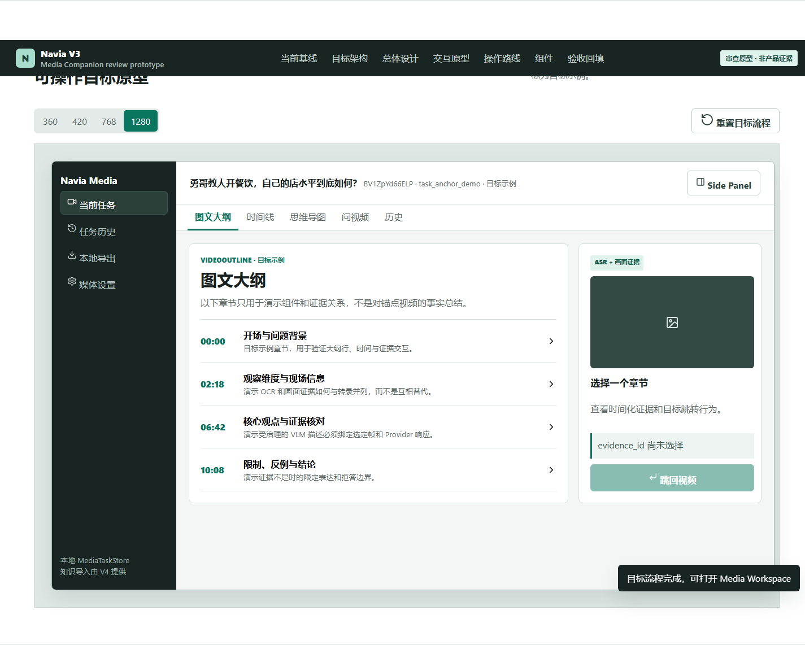
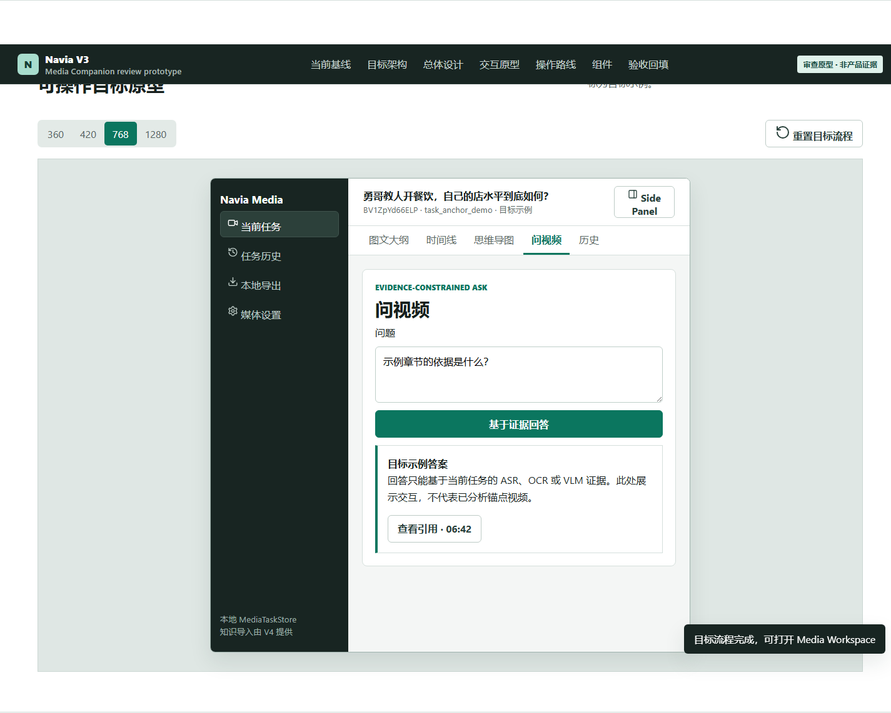

Side Panel 360/420
识别、授权、启动与快速结果
当前 B站视频
bvid/cid/分P/时长/字幕/会话能力
bvid/cid/分P/时长/字幕/会话能力
五项持久授权
会话 · 临时媒体 · 本地音频 · 本地画面 · 选定帧云端视觉
会话 · 临时媒体 · 本地音频 · 本地画面 · 选定帧云端视觉
采集路线
短租约主路径 → 公开字幕 → 可信 tabCapture
短租约主路径 → 公开字幕 → 可信 tabCapture
开始分析 / 取消 / 打开工作台
Side Panel 负责识别、会话授权、启动和采集路线；Media Workspace 把受控 Cookie 会话、公开字幕或标签页回退得到的转录，与关键帧、OCR、授权 VLM 汇成可引用的大纲、时间线、思维导图和问答，并支持跳回真实视频。
这些图片来自已落盘的真实 Chrome 证据，只证明现有普通网页读取、Side Panel 和 Workspace 外壳。它们不证明字幕、ASR、OCR、VLM 或 MediaTask 已实现。


0b8b8c07…2ba。数据流单向通过 Runtime 与治理层。前端不直连 ASR、VLM、B站媒体接口或 V4 知识服务。
本节由确定性 HTML/CSS 生成，是可核查的设计结构。原 AI 样张因包含错误视频和 V3 范围外模块，已从规格页面移除；任何未来 AI 图也不得承担实体、文本或验收事实权威。
这里是交互权威。可授予/撤销授权、启动/取消模拟任务、切换 Workspace 视图、选择章节、提问和模拟跳回。所有结果均标为目标示例。
授权持续到你主动撤销；每个任务只签发短期租约，Cookie 值不落盘。标签页捕获仅作为可信点击回退。
每段图示都对应未来真实 Chrome 验收。示例状态不能替代执行截图和结构化证据。
核对 bvid/cid/分P/时长、会话可用性和“无公开字幕”。五项授权后刷新不重复弹窗，设置可撤销。
点击后创建短期租约并获取任务期媒体；平台拒绝时明确回退公开字幕或可信标签页采集。取消后确认凭据文件和临时媒体均清理。
抽查至少 8 个节点。字幕推断、OCR 和 VLM 描述必须分型并指向真实时间。
有证据问题显示引用，无证据问题拒答；5 次跳转误差不超过 2 秒。




所有组件通过 runtimeClient 消费同一 MediaTask。详细字段和事件见组件路由设计与 JSON Schema。
| 组件 | 容器 | 核心交互 | 必须拒绝 |
|---|---|---|---|
| MediaQuickSurface | Side Panel | 识别、启动、取消、打开 Workspace | 用旧任务冒充当前页 |
| MediaConsentPanel / MediaAcquisitionStatus | Side Panel / 设置 | 五项授权、短租约、回退原因、主动撤销 | 持久化 Cookie 值或把租约当永久凭据 |
| MediaRunProgress | Side Panel | 阶段、进度、清理、重试 | 取消后继续处理 |
| VideoOutlineReader / Timeline / Mindmap | Workspace | 同一 outline 的三种视图 | 三个视图各自生成事实 |
| VisionEvidenceGallery / Drawer | Workspace | 分型证据、打开引用、跳回 | 普通截图冒充 VLM 证据 |
| AskVideoPanel | Workspace | 证据约束问答和拒答 | 无引用 answered |
| MediaTaskHistory / Export | Workspace | 本地历史、Markdown ZIP/JSON | 声称已导入知识库 |
数据保存在本浏览器 localStorage，可导出 JSON。默认均为“未执行”，不会自动产生 PASS。
| 验收项 | 操作与预期 | 实际状态 | 截图/证据路径 | 实际结果与问题 |
|---|